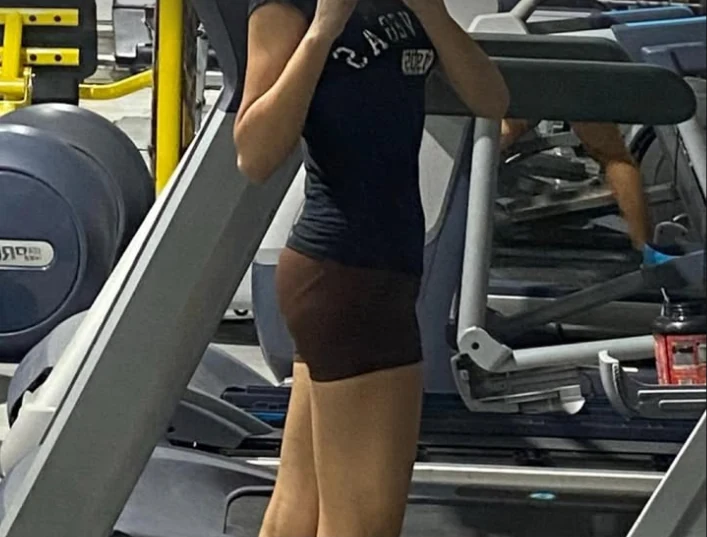
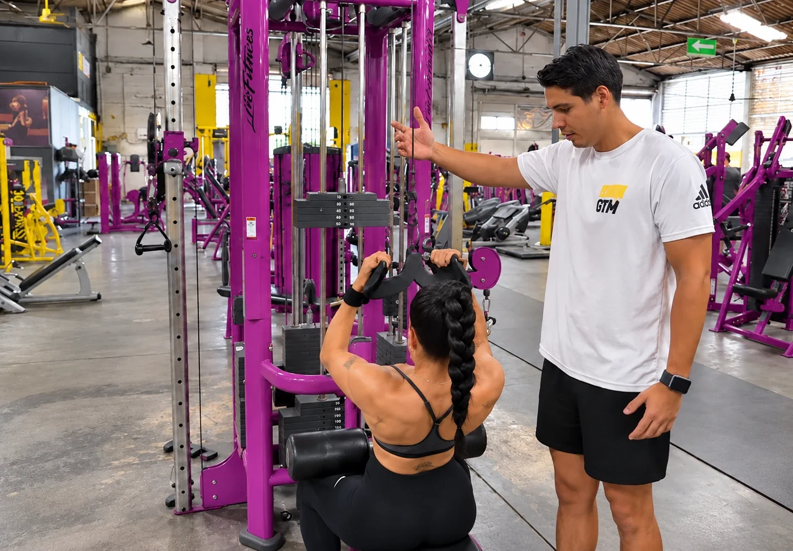
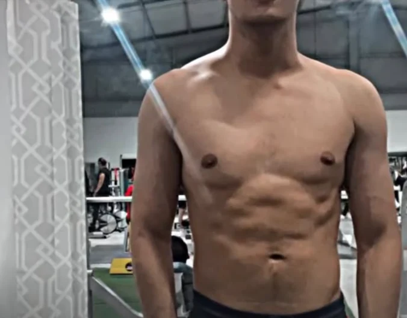
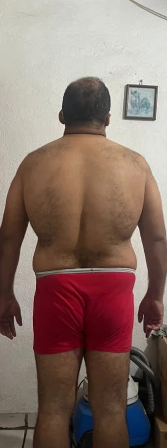
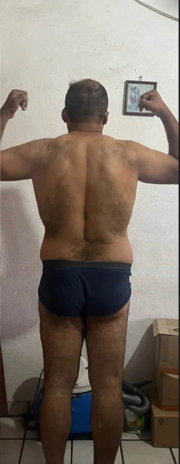
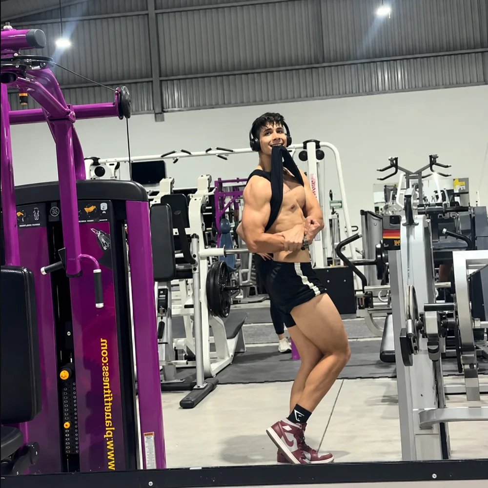
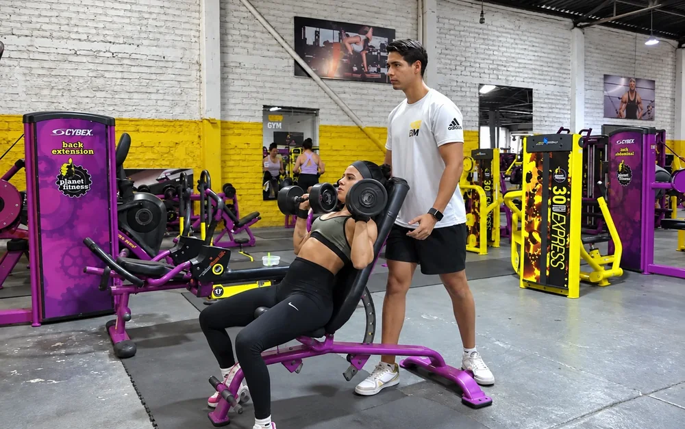
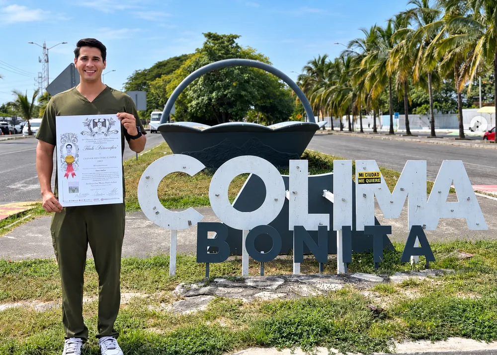

Recomposición femenina
Enfoque tren inferior
Redujo grasa corporal y ganó forma y volumen en piernas y glúteos, con un plan sin dietas extremas.

Planes personalizados y flexibles para atletas y para quien quiere cambiar su composición corporal. Consulta presencial en Colima y Villa de Álvarez, o en línea desde cualquier lugar.
Fotos compartidas con autorización de cada persona.

Recomposición femenina
Redujo grasa corporal y ganó forma y volumen en piernas y glúteos, con un plan sin dietas extremas.

Definición masculina
Ordenó su alimentación, ganó masa muscular en el torso y logró una definición abdominal visible.


Pérdida de peso
Redujo grasa en la espalda y la zona lumbar, ganó fuerza y construyó hábitos que puede sostener.
Tu alimentación puede darte energía y estructura, y aun así dejar espacio para disfrutar.


Elige tu objetivo y platicamos por WhatsApp sobre tu plan.
Un plan flexible que considera tus hábitos y se adapta a tu día a día.
Alimentación adaptada a tu entrenamiento y a tu objetivo de ganar músculo.
Acompañamiento para trabajar tu composición corporal y dar seguimiento a tu progreso.
El plan y el seguimiento son los mismos en las dos modalidades.
Colima y Villa de Álvarez
Evaluamos tu composición corporal con InBody o antropometría, revisamos tus hábitos y analizamos tu rendimiento en consultorio.
Desde cualquier lugar
Videollamada, planes digitales y seguimiento con el mismo nivel de personalización, sin importar la distancia.
Más que un menú: una guía para comer mejor, entrenar con intención y avanzar sin dietas rígidas.
Lo esencial para saber cómo empezar y qué esperar del proceso.
Cuéntame qué estás buscando y revisamos cuál modalidad se adapta mejor a ti.
Atención por Danthe Axel Cernas Delgado
